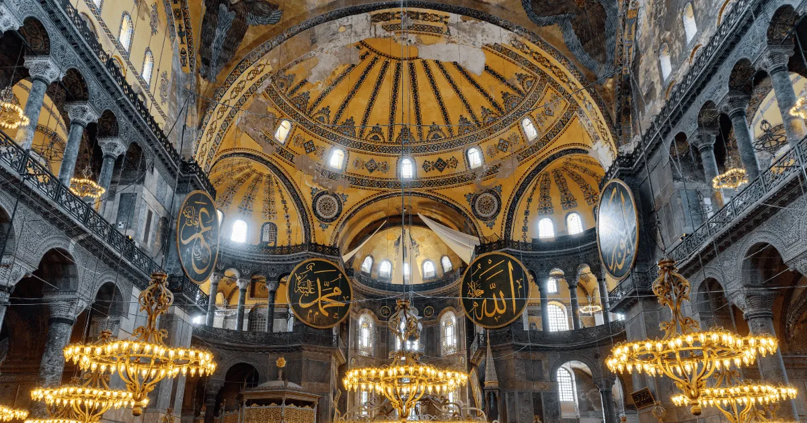
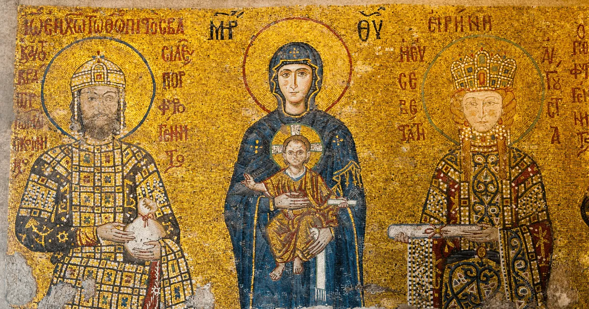
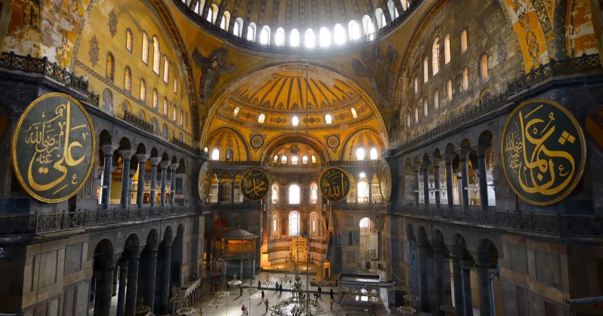
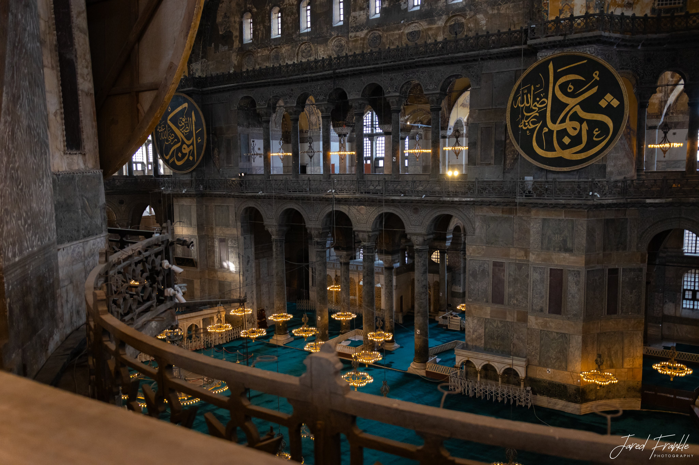
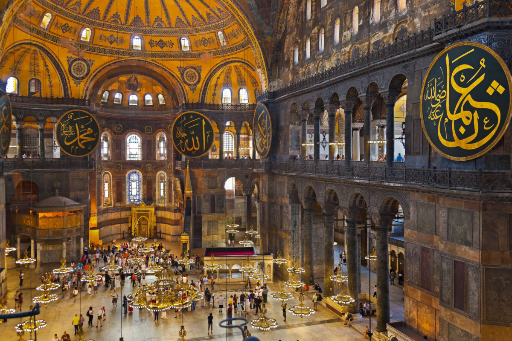

The Famous Dome
The giant dome is the first thing most visitors notice. Completed in 537 AD, it was considered one of the world's great engineering achievements.
Skip the ticket lines, plan your visit, and discover what most first-time visitors miss inside Hagia Sophia.
For nearly 1,500 years, this extraordinary building has been one of the world's most important religious and architectural landmarks.
It has served as a Byzantine cathedral, an Ottoman mosque, a museum, and a mosque once again. Today, Hagia Sophia remains one of the most visited attractions in Turkiye.
What makes it special is not only its size or beauty. It is the unique combination of Byzantine and Ottoman history under one roof.
Many travelers assume they can simply buy tickets at the entrance. While this is possible, queues can become very long during summer months, cruise ship days, weekends and public holidays.
The current GetYourGuide ticket option is built for visitors who want fast entry, flexible self-guided context and a clearer first visit.
Focus on the features that make the visit feel unforgettable, even if you only have one or two hours.

The giant dome is the first thing most visitors notice. Completed in 537 AD, it was considered one of the world's great engineering achievements.

Christian mosaics and Islamic elements tell the story of Istanbul's changing history under one roof.

Massive circular calligraphy panels dominate the interior and remain among the largest examples of Islamic calligraphy.

The upper gallery offers some of the best interior views and is often the highlight of the experience.
Hagia Sophia sits in the heart of Sultanahmet, so it is easy to pair it with nearby landmarks on the same day.

The easiest combination. They are only a few minutes apart and show two very different layers of Istanbul's religious architecture.

A strong first-time visitor route: one monumental interior above ground, then one atmospheric Byzantine water chamber underground.
Best for a full historical day in the Old City. Start early and leave enough time for palace courtyards and museum sections.

Keep it simple: Hagia Sophia, Sultanahmet Square, exterior photos, coffee break and nearby viewpoints.
Most visitors arrive between 11:00 AM and 2:00 PM. This is also the busiest period of the day.
You will usually face smaller crowds and better morning light.
The atmosphere can feel calmer after the main tour group rush.
It gives you the strongest interior viewpoints.
It is close, atmospheric and pairs well with Hagia Sophia.
Short answer: absolutely. Even travelers who are not especially interested in religion or history are often impressed by the scale of the building.
Very few places in the world combine Byzantine architecture, Ottoman heritage, religious significance and UNESCO-level history in one location.
Because Hagia Sophia functions as a mosque, visitors should dress respectfully.
Opening hours can change during religious holidays and special events. Morning visits are recommended, Friday afternoons can be busier, and holiday periods attract larger crowds.
Always check current opening information before your visit.
| Attraction | Why go |
|---|---|
| Blue Mosque | Only a few minutes away. |
| Basilica Cistern | One of Istanbul's most unique underground attractions. |
| Topkapi Palace | The former residence of Ottoman sultans. |
| Sultanahmet Square | The historic heart of old Istanbul. |
Visitor areas generally require tickets, while prayer areas operate differently. Always check current visitor regulations.
Most visitors spend between 1 and 2 hours.
Yes. Photography is generally allowed, but be respectful during prayer times.
Yes. Families regularly visit with children.
Before 9:00 AM or after 4:30 PM.
Focused guides that answer real visitor questions and link back to the ticket page.
What should you wear when visiting Hagia Sophia? Complete dress code guide for men, women, and children.
Planning GuideDiscover the best time to visit Hagia Sophia with local advice on crowds, mornings, afternoons, Fridays, and busy travel periods.
ComparisonCompare Hagia Sophia and the Blue Mosque, including highlights, timing, atmosphere, photos, and the best order to visit.
Time NeededLearn how much time you need for Hagia Sophia, from a quick visit to a detailed visit with the upper gallery.
TicketsUnderstand whether Hagia Sophia is free to visit, why rules can be confusing, and which visitor areas may require tickets.
Upper GalleryIs the Hagia Sophia Upper Gallery worth it? Learn what you see, best photo spots, and local advice before your visit.
HistoryA simple guide to Hagia Sophia's history from Byzantine cathedral to Ottoman mosque, museum period, and today.
Family GuideA family-friendly guide to visiting Hagia Sophia with children, including timing, comfort tips, and nearby attractions.
PhotographyFind the best photography spots in and around Hagia Sophia, including exterior views, upper gallery angles, and best light.
HighlightsA focused guide to the top things to see inside Hagia Sophia, from the dome and mosaics to Ottoman calligraphy and the Upper Gallery.
"Clear ticket instructions and excellent timing tips."
Sarah, USA"The dress code guide saved us a last-minute problem."
Michael, Canada"Booked on mobile and planned the whole Sultanahmet morning."
Elena, Germany